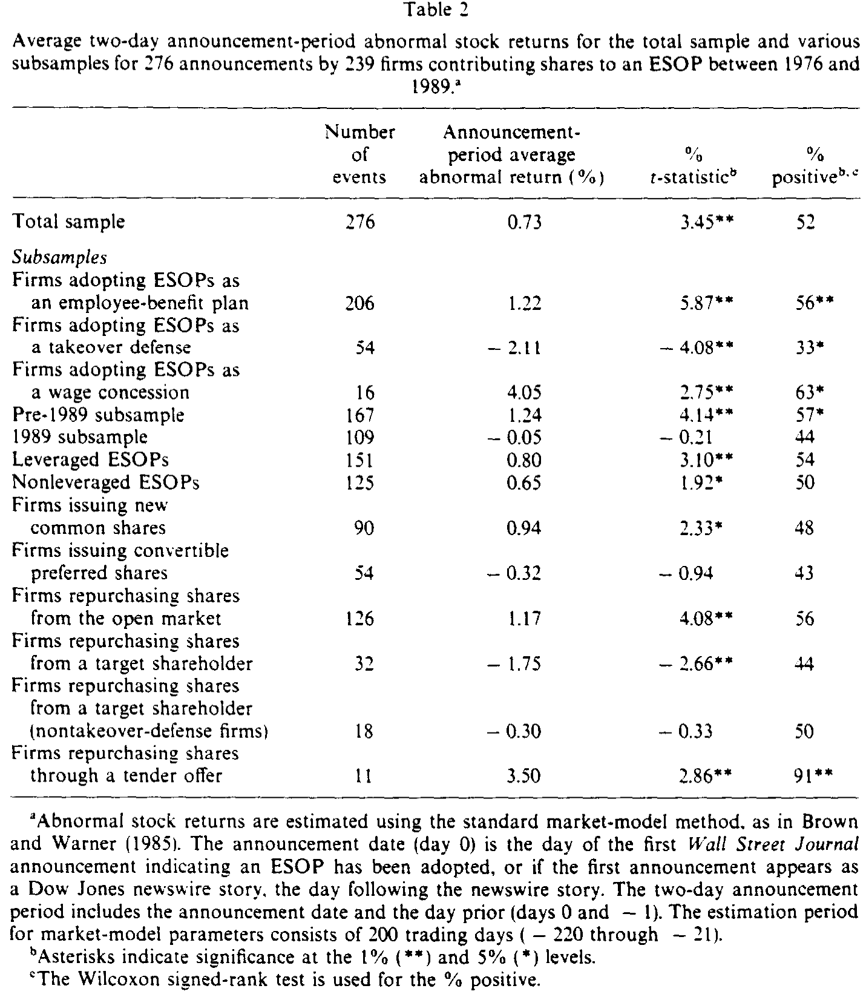
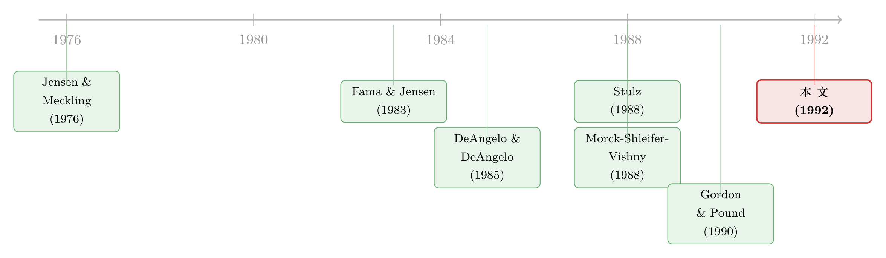

把『投票权』和『钱』拆开来卖：员工持股计划里的一道控制权暗账
本文读的是 Chang & Mayers (1992, Journal of Financial Economics)：员工持股计划 (ESOP) 把更多投票权塞进管理层手里、却没有同比例增加他们持有的现金流索取权。作者发现，当管理层原本只掌握 10%–20% 的投票权时，往 ESOP 里多投一股，公司价值反而上升（控制权服务于股东）；可一旦管理层原本就掌握 40% 以上，多投一股就成了价值的减项——这正是「投票权与现金流索取权分离」所喂大的代理问题。
1 一枚硬币的两面
公司金融里有一个绕不开的老问题：老板自己持有公司股票，到底是好事还是坏事？
教科书会先给你正面的那一面。Jensen 与 Meckling (1976) 说得很清楚：管理层持股越多，他和外部股东的利益就贴得越近，代理冲突 (agency problem) 越小，股东财富越高。这就是所谓的 利益趋同假说 (alignment / convergence-of-interests)。
但硬币还有反面。Fama 与 Jensen (1983) 提醒我们：持股一旦多到某个程度，老板就「焊」在了位子上——他可以从容地浪费资源、消费在职津贴 (perquisites)，外部股东却拿他没办法。这叫 壕沟自保假说 (entrenchment)。后来 Morck、Shleifer 与 Vishny (1988) 以及 McConnell 与 Servaes (1990) 都拿数据去量这条「持股—价值」曲线，得到的也确实是一条先升后降、忽上忽下的非单调关系。
到这里，故事似乎讲完了。可问题恰恰出在：「持股」这两个字，本身就是一个被打包卖出去的套餐。 你买一股普通股，同时买到了两样东西——一份对现金流的索取权 (cash flow claim)，和一张选票 (vote)。当我们看到「老板持股多、公司价值变化」时，我们根本分不清，到底是「他和股东共担了盈亏」（现金流那一面）在起作用，还是「他攥住了更多选票」（控制权那一面）在起作用。
这就是本文最聪明的地方：作者要找一根杠杆，能只拨动「投票权」，而尽量不去动「现金流索取权」。
2 ESOP：一根只拨动投票权的杠杆
接着，一个自然的问题是：现实里哪有这种「只给票、不给钱」的安排？
作者的答案是 员工持股计划 (employee stock ownership plan, ESOP)。公司把自家股票放进一个为员工退休设立的信托里，或者由信托借钱去买；股票先存在一个「悬置账户 (suspense account)」中，再按计划逐年划拨到员工名下。
关键在于：这批股票投出来的票，事实上由谁说了算？本文给出的判断是——由管理层说了算。理由有三条（作者列得很直白）：(1) ESOP 是管理层发起的；(2) ESOP 的受托人 (trustee) 是管理层任命的；(3) 持有这些股票的员工，其利益在面对外部控制权威胁的初期，多半与管理层一致 [Gordon and Pound (1990)]。Shivdasani (1991) 也给了间接证据：员工退休计划持股会显著降低敌意收购成功的概率（单尾 p 值 0.06）。
于是作者在全文里做了一个核心假设：ESOP 信托里的股票，是一个由管理层控制的投票区块，是管理层直接持股的替代品。 换句话说，设立一个 ESOP，就等于在不掏老板自己腰包的前提下，给管理层手里塞了一摞选票。
这是一个联合假设 (joint hypothesis)。如果你不相信「ESOP 的票=管理层的票」，那本文的所有结论都要打折扣。作者自己也承认，更保守的读法是：我们检验的是「ESOP 增强了管理层投票权」与「市场如何看待这件事」的联合命题。这一点请读者始终记在心里。
数据上，这根杠杆拨动的幅度并不小：样本里 ESOP 平均贡献了公司 9.2% 的流通股（中位数 6.8%）；而在设立 ESOP 之前，董事和高管 (officers and directors) 平均持有 12.8% 的股份（中位数 6.4%）。一个 9% 的投票区块，足以改写一家公司的控制权格局。
3 Stulz 的预言：一条会拐弯的曲线
但真正关键的一步，在于这根杠杆该往哪个方向预测。
如果只有「壕沟自保」一种力量，那答案很简单：ESOP 增强了管理层投票权 → 老板更安全 → 股东受损 → 公告日股价该跌。可这就把故事讲单薄了。
Stulz (1988) 提供了一个更精巧的预言。他论证：当管理层投票权较低时，公司价值与投票权正相关；当投票权变得很大时，二者转为负相关。直觉是这样的——
- 投票权较低时：给管理层更多控制权，等于把公司「锁」得更紧，敌意收购方要想拿下控制权，就得买更多的股票、出更高的价。即便收购的概率因此下降，只要被诱发出来的期望溢价足够高，股东仍然可以更富。所以这一段，多给票是好事。
- 投票权很大时：敌意收购已被彻底封死，控制权市场的竞争消失。老板坐稳了位子，开始安心地消费在职津贴、损害外部股东。这一段，多给票就是坏事。
把这条曲线翻译成可检验的命题就是：ESOP 公告日的股东财富变化，应当与「投进 ESOP 的股份比例」正相关——但只在管理层初始投票控制较低时如此；当初始控制较高时，二者转为负相关。 这是一条有「内部最优 (interior optimum)」的曲线。
注意这条命题的「指纹」：它不是「ESOP 好」或「ESOP 坏」，而是贡献比例与初始控制的交互会变号。而那些竞争性的解释——激励 (incentive)、税收 (tax)、融资 (source-of-financing)——虽然也预测「贡献比例越高、股东财富变化越正」，却都没有这种随初始投票控制而拐弯的内部最优。这就是作者用来把「投票权假说」从一堆替代假说里识别出来的那把刀。
（关于「投票权本身值多少钱」这个更一般的问题，可参见《投票权到底值多少钱？——一场「自己卖给自己」的股权统一实验》与《同一家公司，两种股票，两个价格——控制权的价钱，写在一国的法律里》。）
4 识别策略：先看平均，再看横截面
本文不是一篇理论论文，它的识别建立在事件研究 (event study) 加横截面回归 (cross-sectional regression) 两步上。
第一步，事件研究。 作者用标准的市场模型法 (market-model method)，做法如 Brown 与 Warner (1985)。先用估计窗口（事件前 -220 到 -21 共 200 个交易日）估出每只股票的市场模型参数，再算公告窗口里的异常收益：
$$ AR_{it} = R_{it} - (\hat{\alpha}_i + \hat{\beta}_i R_{mt}) $$
其中 \(R_{mt}\) 用 CRSP 等权指数（含股利）代理。公告日记为第 0 天（首次出现在《华尔街日报》的那天；若先来自道琼斯新闻线，则取其后一天），两日公告窗口取第 0 天与前一天（days 0 和 -1）。这一步给出的是「平均而言，市场怎么看 ESOP」。
第二步，横截面回归。 这才是检验 Stulz 预言的地方：把每家公司的公告窗口异常收益，回归到「投进 ESOP 的股份比例」以及它与「管理层初始投票控制」的交互项上，看系数是否随初始控制的高低而变号。投票权、激励、税收、融资这几个假说并不互斥，作者要做的，是看横截面上谁的「指纹」对得上。
数据。 样本始于 1976–1989 年间、来自全国员工持股中心 (NCEO) 名单与道琼斯新闻的 402 个 ESOP 公告。剔除 91 个有混淆事件的样本（其中最大的一类是 47 起杠杆收购 (LBO) 里的 ESOP，管理层可能借此拿到 100% 投票控制），再剔除 35 个数据不全的，最终得到 276 个公告、239 家公司。它们被分成三个互斥子样本：
- 员工福利子样本 (employee-benefit)：
206个，找不到控制权或集体谈判相关证据； - 收购防御子样本 (takeover-defense)：
54个，ESOP 公告前一年有强烈的控制权相关事件； - 工资让步子样本 (wage-concession)：
16个，ESOP 是集体谈判协议的一部分。
财务数据来自 Compustat 与 Moody's，持股数据来自代理声明 (proxy statements)，机构持股来自标普股票指南。值得一提的一个对照：相比按市值与四位 SIC 码匹配的非 ESOP 同行，采用 ESOP 的公司，其高管持股的均值/中位数为 12.8% / 6.4%，显著低于匹配公司的 17.0% / 10.1%（t = -3.24，p = 0.001）。也就是说，搞 ESOP 的公司，恰恰是那些控制权本来偏弱、有「补票」动机的公司——这与控制权动机的故事一致。
5 平均效应：一个不太起眼的 +0.73%
然后，结果出来了。
全样本两日公告窗口的平均异常收益是显著的 +0.73%（t = 3.45）。但作者很诚实地指出：只有 52% 的公告异常收益为正，Wilcoxon 符号秩检验只给出 13.9% 的弱证据。换句话说，平均值是正的，但分布很「散」——这恰恰预告了：真正的故事不在平均数里，而在横截面里。
子样本一拆开，反差立刻清晰：
- 员工福利子样本：
+1.22%（t =5.87）； - 收购防御子样本：
-2.11%（t =-4.08）； - 工资让步子样本：
+4.05%（t =2.75）。
同一件事——设立 ESOP——在「为员工」的语境里是好消息，在「为防守」的语境里却是实打实的坏消息。此外还有一个时间上的断点：1989 年之前的子样本异常收益为显著的 +1.24%，而 1989 年当年却是不显著的 -0.05%（两均值相等的检验 p = 0.05 被拒绝）。作者把 1989 年的爆发归因于一项 1988 年的特拉华州法律和 1989 年初支持宝丽来 (Polaroid) 设立「阻断式 ESOP」的判决——当 ESOP 越来越像一件防御武器，市场的掌声自然就淡了。

Table 2
回购方式的拆分也很有意思：指明从公开市场回购股份的公告异常收益为 +1.17%，要约回购为 +3.50%，而从特定大股东 (target shareholder) 处回购的却是显著为负的 -1.75%——后者闻起来就有「绿票讹诈 (greenmail)」的味道。
6 反转：那条会拐弯的曲线，真的拐了
但平均效应只是开胃菜。真正的反转，出现在横截面。
作者的核心发现，和 Stulz (1988) 的预言严丝合缝：
- 当管理层初始控制在
10%–20%之间时，往 ESOP 里多投一份股份，会增加股东财富——给管理层更多控制权，确实诱发了更高的预期收购溢价，服务了股东利益； - 在这一区间的上下两端，正向的投票权收益只有微弱证据；
- 而当管理层初始控制
40%或以上时，更大的 ESOP 贡献会削减股东财富。
更妙的、也是全文点睛的一笔是关于现金流索取权的：初始控制超过 20% 的管理层，会在 ESOP 公告前后减少自己持有的现金流索取权；而控制 40% 以上的那群人，减持幅度最大。
把这两件事放在一起看，故事就完整了：高控制权的老板，一边用 ESOP 维持甚至增强了投票控制，一边悄悄卖掉了自己的现金流索取权——票留下，钱套现。这正是「投票权与现金流索取权分离」的教科书式画面（它和双层股权、限制投票权股票如出一辙）。二者的分离，喂大了管理层与外部股东之间的代理问题，于是股东财富受损。
这就是为什么本文比「ESOP 是好是坏」高明一截：它没有给出一个非黑即白的答案，而是指出同一个工具，在控制权光谱的两端，符号是相反的。低控制权时它是「请人来抬高收购价」的请柬，高控制权时它是「把自己焊在位子上、顺手套现」的螺丝刀。
（管理层把投票权和自己的财富敞口分开来摆布，这条暗线还可参见《老板该不该抵抗收购？答案写在他自己的股票里》与《少持股，也能照样说了算——一道藏在「反收购法」里的控制权暗账》。）
7 文献脉络
把这篇论文放回它的坐标系里，脉络其实很清晰。
最上游是 Jensen 与 Meckling (1976) 立下的代理框架——持股趋同、降低代理成本。紧接着 Fama 与 Jensen (1983) 补上了反面——持股过多则壕沟自保。这两股力量交汇，催生了 1980 年代末的一批「持股—价值」实证：Morck、Shleifer 与 Vishny (1988) 和 McConnell 与 Servaes (1990) 都画出了那条非单调曲线。

但这些研究都没法把「投票权」从「现金流索取权」里干净地剥出来。于是有两条支线试图分离它们：一条是双层股权 (dual-class) 文献——DeAngelo 与 DeAngelo (1985)、Partch (1987)、Jarrell 与 Poulsen (1988)、Lease、McConnell 与 Mikkelson (1983)，但它们关于股东是否受损的结论是混合的；另一条是 Stulz (1988) 的理论，他把「投票权—价值」写成一条带内部最优的曲线，并明确预言了管理层控制对收购溢价的非单调影响。
本文正坐落在这两条支线的交汇点上：它借 ESOP 这根「只给票、不给钱」的杠杆，第一次用一个干净的事件去检验 Stulz 的非单调预言；同时它与同期的 ESOP 文献——Gordon 与 Pound (1990)、Chaplinsky 与 Niehaus (1990)——互为补充，后者从「控制权转移」的角度给出了 ESOP 损害股东的证据。
（关于这条代理理论主干至今的回响，可参见《债务这副药，为什么不能全吃？——重读 Jensen 和 Meckling 五十年》。）
8 评论与延伸（Q&A + 研究方向）
(a) 几个可能的疑问
Q：ESOP 的投票权真的归管理层吗？这个核心假设站得住脚吗？
这是全文的命门，作者自己也坦承这是一个联合假设。支撑它的是制度逻辑（管理层发起、任命受托人）和间接证据（Shivdasani 1991 的 p=0.06、Gordon-Pound 1990 的负财富效应）。但直接证据——比如逐票统计的投票结果——很难拿到。如果在某些 ESOP 里员工真的独立投票，那「投票权增量」就被高估了，结果会被稀释。读者应把结论理解为「在 ESOP 票偏向管理层的前提下成立」。
Q：+0.73% 这么小、还只有 52% 为正，凭什么说 ESOP 有信息含量？
恰恰因为平均值小而散，作者才把重心放在横截面。平均效应只说明 ESOP 是多种力量（投票权、激励、税收、融资、信息）叠加的净结果；真正的识别力来自「贡献比例 × 初始控制」的交互在 10–20% 与 40%+ 两端变号——这是其他假说给不出的指纹。
Q：怎么排除这其实是激励/税收/融资效应，而不是投票权？
关键在于「内部最优」。激励、税收、融资假说都只预测「贡献越多、财富变化越正」的单调关系，唯独投票权假说（经 Stulz）预测一条随初始控制而拐弯的曲线。观察到 40%+ 时符号转负、且这些老板同时减持现金流索取权，最契合投票权/壕沟自保的解释。
Q：收购防御子样本 -2.11%，会不会本身就被「公告前已有收购威胁」污染了？
会，所以作者把它单列。这个子样本的负收益，一部分确实来自「市场看穿这是防御工事」。但这并不削弱主结论——它反而印证了「同一工具在防御语境里被定价为坏消息」。把它和员工福利子样本的 +1.22% 对照，正是符号依语境而变的证据。
Q：从特定股东处回购的 -1.75%，是不是绿票讹诈？这和 ESOP 有关系吗？
作者引 Bradley 与 Wakeman (1983) 指出，非 ESOP 的定向回购也有约 -1.4% 的财富损失，量级相近。这说明那部分负收益更像是「定向回购」本身的味道，而非 ESOP 特有。所以作者把回购方式单独拆开，避免它污染对 ESOP 投票权效应的解读。
Q：1989 年的样本爆炸式增长又收益转负，会不会把结论带偏？
1989 年占了 109/276，且当年异常收益不显著（-0.05%），与 pre-1989 的 +1.24% 有显著差异。作者将其归因于特拉华法与宝丽来判例使 ESOP 越发「防御化」。这提示结论对样本期敏感：早期 ESOP 更像福利/激励，晚期更像防御武器——好在横截面的交互结论在控制了这些维度后依然成立。
(b) 几个可能的研究问题与提案
1. ESOP 投票权对公司债定价的影响（信用市场视角）
【经济故事】本文只看了股东财富。但投票权与现金流索取权分离、敌意收购被封死，对债权人是好是坏并不显然：一方面收购威胁降低、经营更稳，利好债权人；另一方面壕沟自保、在职津贴消费上升，又侵蚀偿债资源。 【可行性】中。需要把 ESOP 公告匹配到发行人层面的债券利差（如 TRACE 时代之后的样本，或更早的债券报价），做债券事件研究。难点是 1976–1989 年公司债数据稀疏；可行的折中是用 1990 年代后的 ESOP 样本重做。识别仍可沿用「初始控制 × 贡献比例」的交互。
2. 外资持有人会不会改变 ESOP 的「投票权归属」？
【经济故事】本文假设 ESOP 票归管理层。但当公司有大量外资机构持有人时，他们的监督与投票行为可能抵消 ESOP 的壕沟效应——外资到底是「蝗虫」还是监督者，本身就有争议。 【可行性】中。需要 ESOP 公告样本叠加外资持股比例（13F 类数据对外资覆盖有限，可用国别披露或 FactSet 持有人数据）。识别策略：看外资持股高低如何调节「40%+ 控制 → 负财富效应」的斜率。诚实地说，外资持股的内生性是大坑，最好找一个外生冲击（如指数纳入带来的被动外资）。（这条与《外资真是「蝗虫」吗？——一次跨 30 国的长期投资体检》的问题意识相通。）
3. ESOP 设立后的长期运营后果，而不只是公告日反应
【经济故事】公告日异常收益只反映市场的「预期」。如果壕沟假说成立，那么 40%+ 控制的公司在 ESOP 之后，应当出现实际的在职津贴上升、收购概率下降、长期经营业绩恶化。 【可行性】高。用 Compustat 长期面板做事后业绩（ROA、收购被接管概率、并购支出）的差异分析，以初始控制分组。识别上可用 Stulz 曲线的非单调性做安慰剂检验：业绩恶化应集中在高控制权组。数据现成，doable。
4. 把「投票权」与「现金流索取权」的分离做成一个连续度量
【经济故事】本文用「初始控制 + 贡献比例」近似分离，但没有一个统一的「楔子 (wedge)」指标。若能为每家公司构造一个 vote/cash-flow 比值，就能把 Stulz 曲线直接画出来。 【可行性】中。需要逐家手工或用机读代理声明，构造管理层的投票权份额与现金流份额。现代样本（双层股权 IPO 复兴后）数据更全。识别：用这个连续楔子去预测估值（Tobin's Q）与收购溢价。难点是楔子的测量误差。
5. ESOP 作为流动性事件：员工持股集中是否抬高了股票的非流动性？
【经济故事】ESOP 把大块股票「锁」进信托与员工账户，相当于减少了自由流通股。这可能抬高买卖价差、降低流动性，从而独立于治理效应影响估值。 【可行性】高。用 ESOP 公告前后的 bid-ask 价差、Amihud 非流动性指标做事件研究。CRSP 日数据足够。识别：贡献比例越大、锁定越多，流动性恶化应越明显；可与治理效应做横截面竞赛。doable 且新颖。
9 我的判断
贡献。 这篇论文的真正贡献，不在那个 +0.73% 的平均数，而在它找到了一根罕见的、能「只给票、不给钱」的杠杆，并用它把 Stulz (1988) 那条抽象的非单调曲线，第一次落到了一个可观测的事件上。「10–20% 时多给票有益、40%+ 时多给票有害，且高控制权老板同时套现现金流索取权」——这组结果干净地把「投票权与现金流索取权分离」的代理成本摆上了台面。在 1992 年，这是把控制权理论与实证缝合得相当漂亮的一针。
对识别的担忧。 最大的软肋仍是那个联合假设：ESOP 的票是否真的、以及在多大程度上归管理层。整篇论文的解释力都吊在这根绳子上。其次，初始投票控制本身是内生的——会去设 ESOP 的公司，恰恰是控制权偏弱、或正面临收购威胁的公司（作者自己的匹配对照也证实了这一点）。这意味着「贡献比例 × 初始控制」的交互，可能掺入了「哪些公司选择搞 ESOP」的选择效应，而非纯粹的处置效应。再者，横截面回归的样本被切成多个子样本后，单格样本量并不大（工资让步只有 16 个），统计功效有限。
后续想看到什么。 我最想看到的是把镜头从「公告日」拉长到「设立之后」：如果壕沟假说为真，40%+ 控制的公司应当在事后真的出现收购概率下降、在职消费上升、长期业绩恶化——这是公告日反应给不出、却最能证伪/证实机制的证据。其次，我希望有人用一个外生的控制权冲击（比如反收购立法、指数被动持股变动）去打破初始控制的内生性，把这条 Stulz 曲线真正「因果化」。最后，从我自己关心的信用市场角度，ESOP 对债权人的净效应至今几乎是一片空白——票留下、钱套现的那群老板，他们的债券利差有没有动？这是一个现成而诱人的问题。
参考文献
- Brown, S. and J. B. Warner (1985). Using daily stock returns: The case of event studies. Journal of Financial Economics 14, 3–32.
- Chaplinsky, S. and G. Niehaus (1990). Defensive ESOPs and shareholder wealth. Working paper, Northwestern University.
- DeAngelo, H. and L. DeAngelo (1985). Managerial ownership of voting rights: A study of public corporations with dual classes of common stocks. Journal of Financial Economics 14, 33–69.
- Fama, E. F. and M. C. Jensen (1983). Separation of ownership and control. Journal of Law and Economics 26, 301–325.
- Gordon, L. A. and J. Pound (1990). ESOPs and corporate control. Journal of Financial Economics 27, 525–555.
- Jarrell, G. A. and A. B. Poulsen (1988). Dual-class recapitalizations as antitakeover mechanisms: The recent evidence. Journal of Financial Economics 20, 129–152.
- Jensen, M. C. and W. H. Meckling (1976). Theory of the firm: Managerial behavior, agency costs and ownership structure. Journal of Financial Economics 3, 305–360.
- Lease, R. C., J. J. McConnell and W. H. Mikkelson (1983). The market value of control in publicly-traded corporations. Journal of Financial Economics 11, 439–471.
- McConnell, J. J. and H. Servaes (1990). Additional evidence on equity ownership and corporate value. Journal of Financial Economics 27, 595–612.
- Morck, R., A. Shleifer and R. W. Vishny (1988). Management ownership and market valuation: An empirical analysis. Journal of Financial Economics 20, 293–315.
- Partch, M. M. (1987). The creation of a class of limited voting common stock and shareholder wealth. Journal of Financial Economics 18, 313–339.
- Shivdasani, A. (1991). The board of directors, ownership structure, and hostile takeovers. Unpublished dissertation, Ohio State University.
- Stulz, R. M. (1988). Managerial control of voting rights, financing policies, and the market for corporate control. Journal of Financial Economics 20, 25–54.